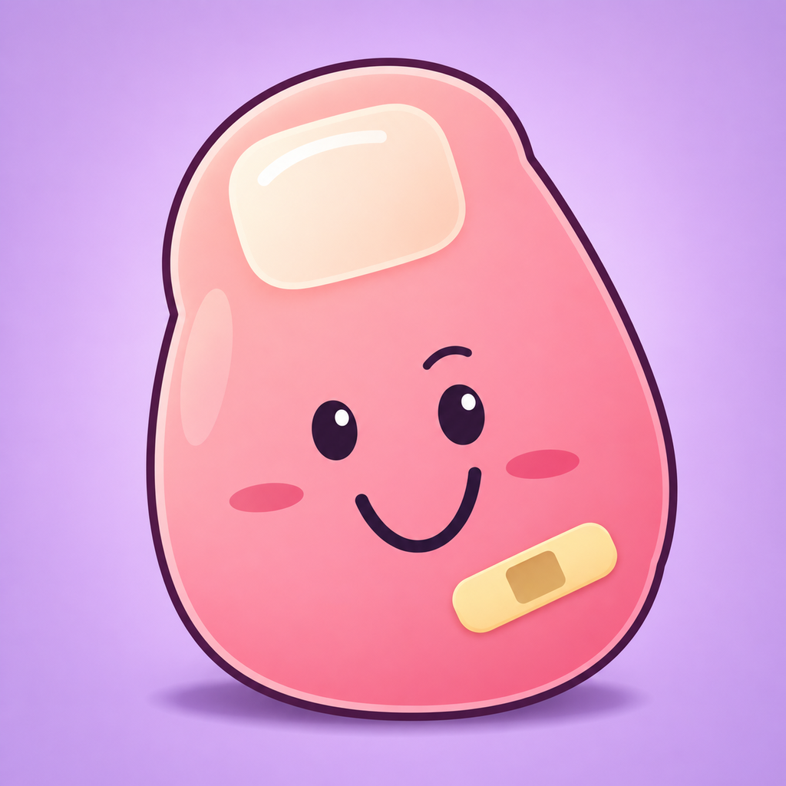

Small toe.
Big adventure.
Stub My Toe: The Game
Meet Pip. Jump the clutter, duck the flying toys, and turn everyday rooms into a little adventure.
Play nine household levels, collect bandages, discover safe platforms, and try for a new personal best in Endless. Choose a difficulty that feels right, learn the moves in How to Play, and retry as often as you like.
Get help
Email josephmunford@icloud.com for help or feedback. Include your iPhone model, iOS version, app version, the level or mode, and what happened. Do not send passwords, account codes, or other sensitive information.
Two moves. One brave toe.
- Jump: tap the playfield, swipe up, or use the Jump button.
- Slide: swipe down or use Slide to duck flying toys.
- Learn: open How to Play or choose Play Tutorial in Settings.
- Pause: use the pause button to resume, retry, or return Home.
Progress and retries
Finish a level to unlock the next one. Earlier levels remain replayable, and retries are unlimited. Replaying or losing an earlier level does not erase later unlocks. Progress and settings are saved on your device. Keep the app installed when updating; deleting the app can remove its local save.
Sound and comfort
Settings has separate Music and Sound Effects controls, plus haptics, button controls, camera shake, and reduced motion. New configurations start with very quiet music. Existing volume choices are preserved, including mute. If music is silent, check the Music switch and slider, your device volume, and Silent mode.
Game Center and offline play
The game works without an app account or internet connection. Game Center is optional and handled by Apple. Online features may vary by mode and availability; local levels, scores, and progress remain usable when Game Center is unavailable.
Beta feedback
If you are testing with TestFlight, use TestFlight’s Send Beta Feedback or the support email. Tell us about jump/slide timing, difficulty, progression, audio balance, unexpected behavior, and any layout problems. TestFlight builds are previews and may change.
There are no ads, subscriptions, or in-app purchases. Read the privacy policy.